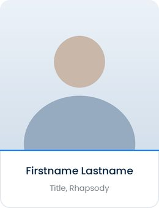

Photography
Imagery reflects a modern SaaS company serving a high-stakes, regulated, human industry. Show the systems, teams, and technology that make care possible, not hospital care itself. Confident, open, collaborative.


Approved library examples: forward-facing, genuine, bright natural light, modern workspaces, inclusive across roles and ages.
Use
- People facing the camera or each other, eye contact, active discussion.
- Faces sharp and eyes visible; soft, even lighting.
- Inclusive representation across roles, ages, and identities.
- Modern workspaces with visible data or code; bright, natural light.
- Clean backgrounds and consistent color temperature across a page.
Avoid
- Dark, dim, or tech-noir treatments.
- Motion blur or soft-focus faces.
- Harsh light flaring toward the camera.
- Backs to camera, staged handshakes, stiff poses.
- Literal hospital-care scenes; overly retouched or generic stock.
Portrait treatments
For real people, employees, webinar speakers, and customers, use one of these treatments, the approved standard for portraits. (The heavy color-ring treatment from the earlier brand guide has been retired.)

- Keep accents thin and restrained: one brand color per portrait, primary or secondary colors only, chosen for contrast against the background, Rhapsody Blue or navy on light grounds, light blue or teal on dark. Never the tertiary purple or orange. Hold the one color consistent across a set.
- Bright, forward-facing photo, cropped to face and shoulders, on a clean light background, with generous white space.
- Avoid heavy color rings, white rings, drop shadows, or busy backgrounds behind the portrait.